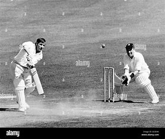

Cricket is a popular sport with a rich history, enjoyed by millions worldwide. It originated in England and has since become a major sport in countries such as India, Australia, Pakistan, South Africa, and the West Indies.Cricket is a bat-and-ball game played between two teams of eleven players each. The primary objective is to score more runs than the opposing team.Players use a wooden bat, a hard leather ball, and protective gear including pads, gloves, and helmets.
|

|
Cricket, a sport known for its strategic depth and thrilling moments, has had numerous highlights throughout its history. Here are some notable highlights (click on the underlined text to know more):
Historic Matches
Ashes : The rivalry between England and Australia has produced some of the most memorable moments in cricket history, such as the 2005 Ashes series, which is often considered one of the greatest series ever played.
1983 Cricket World Cup Final : India’s unexpected victory over the West Indies at Lord's, which changed the landscape of cricket in India.
-
2011 Cricket World Cup Final : India's triumphant victory over Sri Lanka at Wankhede Stadium, Mumbai, under the captaincy of MS Dhoni, which solidified India's status as a cricketing powerhouse and inspired a new generation of cricketers.
Legendary performances
-
Sir Don Bradman’s 99.94 Average : Sir Don Bradman's career batting average of 99.94 in Test cricket remains an unmatched record.
-
Sachin Tendulkar’s 100 International Centuries: Sachin Tendulkar became the first player to score 100 centuries in international cricket, a milestone yet to be surpassed.
-
Brian Lara’s 400 in Test Cricket : Brian Lara’s record-breaking score of 400 not out in a single Test innings against England in 2004 remains the highest individual score in Test cricket.
|
|
Get Started with cricket
Getting started with cricket can be a lot of fun! Here are some steps to help you get into the game:
-
Understand the Basics: Cricket can seem complex at first, but it's helpful to grasp the basic rules and terminology. There are plenty of resources online that explain the rules of cricket in a beginner-friendly way.
- Watch Cricket Matches: Watching matches, whether live or recorded, can help you understand how the game is played, how teams strategize, and the roles of different players.
- Learn about Batting and Bowling: These are the two primary aspects of cricket. Understanding how batting and bowling work will give you insights into the game's dynamics.
- Join a Local Club or Team: If you're serious about playing, joining a local cricket club or team is a great way to get involved. They often provide coaching and opportunities to practice and play matches.
- Practice Basic Skills: Practice batting, bowling, and fielding on your own or with friends. Even basic drills can improve your skills and understanding of the game.
- Stay Updated: Follow cricket news and tournaments to stay informed about the latest happenings in the cricket world.
- Enjoy the Game: Cricket is not just about skills; it's also about enjoying the spirit of the game and the camaraderie with fellow players and fans.
|
|